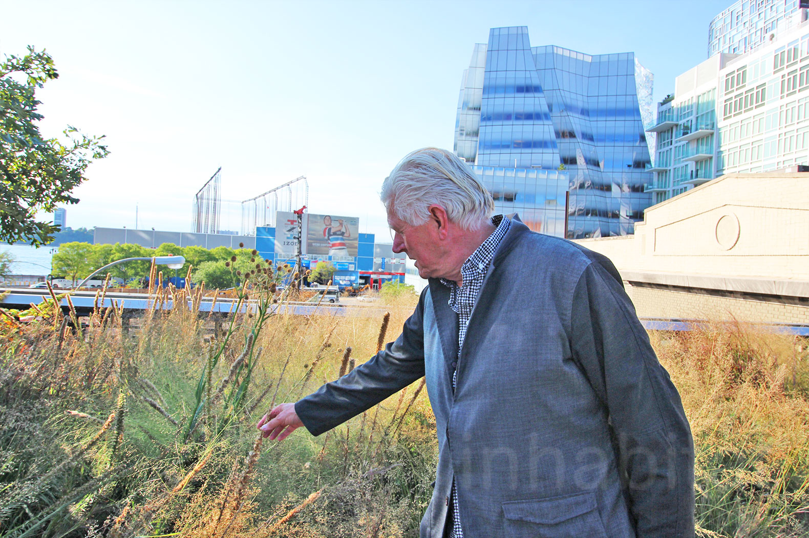

Piet Oudolf (Dutch pronunciation: [ˌpit ˈʌu̯dɔlf]; born 27 October 1944) is an influential Dutch garden designer, nurseryman and author. He is a leading figure of the "New Perennial" movement, using bold drifts of herbaceous perennials and grasses which are chosen at least as much for their structure as for their flower colour.
